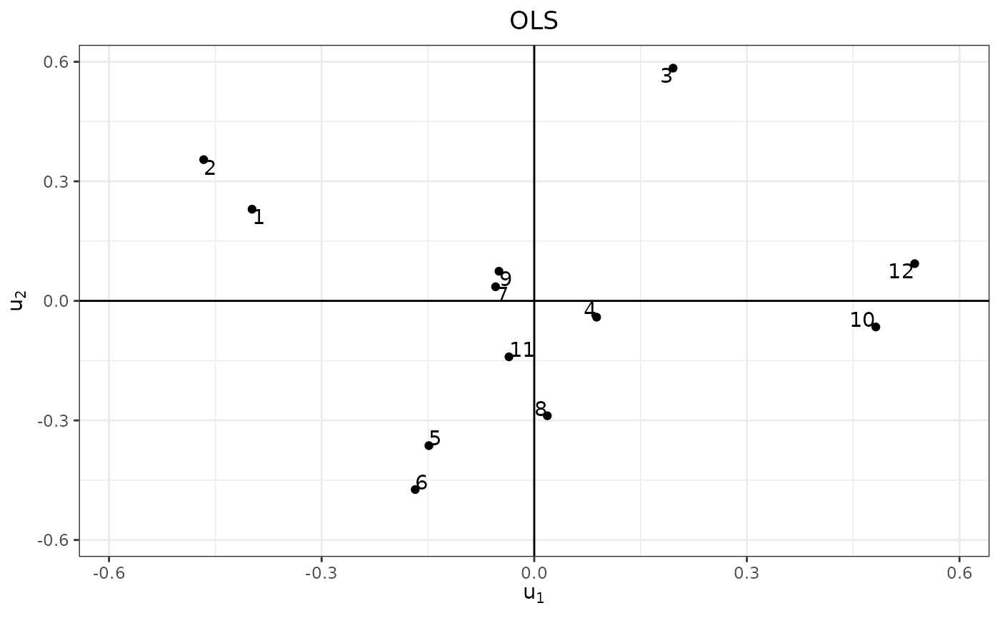
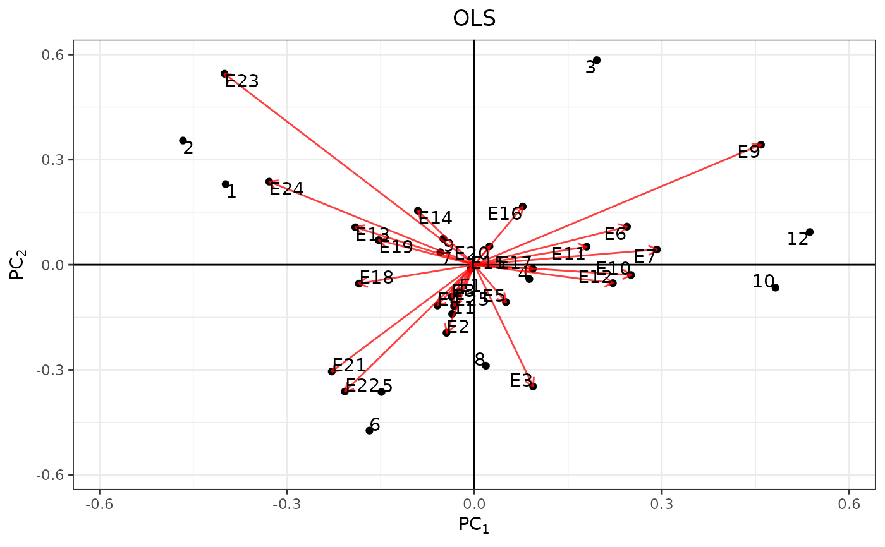

bayes_ammi.RdBayesian estimation method of linear–bilinear models for Genotype by Environment Interaction Model
# S3 method for default bayes_ammi(.data, .y, .gen, .env, .rep, .nIter)
| .data | data.frame |
|---|---|
| .y | Response Variable |
| .gen | Genotypes Factor |
| .env | Environment Factor |
| .rep | Replication Factor |
| .nIter | Number of Iterations |
Genotype by Environment Interaction Model
Perez-Elizalde, S., Jarquin, D., and Crossa, J. (2011) A General Bayesian Estimation Method of Linear–Bilinear Models Applied to Plant Breeding Trials With Genotype × Environment Interaction. Journal of Agricultural, Biological, and Environmental Statistics, 17, 15–37. (doi:10.1007/s13253-011-0063-9)
data(cultivo2008) fm1 <- ge_ammi( .data = cultivo2008 , .y = y , .gen = entry , .env = site , .rep = rep ) r0 <- fm1$g c0 <- fm1$e n0 <- fm1$Rep k0 <- fm1$k mu0 <- fm1$mu sigma20 <- fm1$sigma2 tau0 <- fm1$tau tao0 <- fm1$tao delta0 <- fm1$delta lambdas0 <- fm1$lambdas alphas0 <- fm1$alphas gammas0 <- fm1$gammas ge_means0 <- fm1$ge_means$ge_means data(cultivo2008) fm2 <- ge_ammi( .data = cultivo2009 , .y = y , .gen = entry , .env = site , .rep = rep ) k <- fm2$k alphasa <- fm2$alphas gammasa <- fm2$gammas alphas1 <- tibble::as_tibble(fm2$alphas) gammas1 <- tibble::as_tibble(fm2$gammas) # Biplots OLS library(ggplot2) BiplotOLS1 <- ggplot(data = alphas1, mapping = aes(x = V1, y = V2)) + geom_point() + geom_hline(yintercept = 0) + geom_vline(xintercept = 0) + geom_text(aes(label = 1:nrow(alphas1)), vjust = "inward", hjust = "inward") + scale_x_continuous( limits = c(-max(abs(c(range(alphas1[, 1:2])))) , max(abs(c(range(alphas1[, 1:2])))))) + scale_y_continuous( limits = c(-max(abs(c(range(alphas1[, 1:2])))) , max(abs(c(range(alphas1[, 1:2])))))) + labs(title = "OLS", x = expression(u[1]), y = expression(u[2])) + theme_bw() + theme(plot.title = element_text(hjust = 0.5)) print(BiplotOLS1)BiplotOLS2 <- ggplot(data = gammas1, mapping = aes(x = V1, y = V2)) + geom_point() + geom_hline(yintercept = 0) + geom_vline(xintercept = 0) + geom_text(aes(label = 1:nrow(gammas1)), vjust = "inward", hjust = "inward") + scale_x_continuous( limits = c(-max(abs(c(range(gammas1[, 1:2])))) , max(abs(c(range(gammas1[, 1:2])))))) + scale_y_continuous( limits = c(-max(abs(c(range(gammas1[, 1:2])))) , max(abs(c(range(gammas1[, 1:2])))))) + labs(title = "OLS", x = expression(v[1]), y = expression(v[2])) + theme_bw() + theme(plot.title = element_text(hjust = 0.5)) print(BiplotOLS2)BiplotOLS3 <- ggplot(data = alphas1, mapping = aes(x = V1, y = V2)) + geom_point() + geom_hline(yintercept = 0) + geom_vline(xintercept = 0) + geom_text(aes(label = 1:nrow(alphas1)), vjust = "inward", hjust = "inward") + geom_point(data = gammas1, mapping = aes(x = V1, y = V2)) + geom_segment(data = gammas1, aes(x = 0, y = 0, xend = V1, yend = V2), arrow = arrow(length = unit(0.2, "cm")), alpha = 0.75, color = "red") + geom_text(data = gammas1, aes(x = V1, y = V2, label = paste0("E", 1:nrow(gammasa))) , vjust = "inward", hjust = "inward") + scale_x_continuous( limits = c(-max(abs(c(range(alphas1[, 1:2], gammas1[, 1:2])))) , max(abs(c(range(alphas1[, 1:2], gammas1[, 1:2])))))) + scale_y_continuous( limits = c(-max(abs(c(range(alphas1[, 1:2], gammas1[, 1:2])))) , max(abs(c(range(alphas1[, 1:2], gammas1[, 1:2])))))) + labs(title = "OLS", x = expression(PC[1]), y = expression(PC[2])) + theme_bw() + theme(plot.title = element_text(hjust = 0.5)) print(BiplotOLS3)fm3 <- bayes_ammi( .data = cultivo2009 , .y = y , .gen = entry , .env = site , .rep = rep , .nIter = 200 )#> Error in bayes_ammi.default(.data = cultivo2009, .y = y, .gen = entry, .env = site, .rep = rep, .nIter = 200): object 'n0' not foundMean_Alphas <- fm3$Mean_Alphas#> Error in eval(expr, envir, enclos): object 'fm3' not foundMean_Gammas <- fm3$Mean_Gammas#> Error in eval(expr, envir, enclos): object 'fm3' not found# Biplots Bayesian BiplotBayes1 <- ggplot(data = Mean_Alphas, mapping = aes(x = V1, y = V2)) + geom_point() + geom_hline(yintercept = 0) + geom_vline(xintercept = 0) + geom_text(aes(label = 1:nrow(Mean_Alphas)), vjust = "inward" , hjust = "inward") + scale_x_continuous( limits = c(-max(abs(c(range(Mean_Alphas[, 1:2])))) , max(abs(c(range(Mean_Alphas[, 1:2])))))) + scale_y_continuous( limits = c(-max(abs(c(range(Mean_Alphas[, 1:2])))) , max(abs(c(range(Mean_Alphas[, 1:2])))))) + labs(title = "Bayes", x = expression(u[1]), y = expression(u[2])) + theme_bw() + theme(plot.title = element_text(hjust = 0.5))#> Error in ggplot(data = Mean_Alphas, mapping = aes(x = V1, y = V2)): object 'Mean_Alphas' not foundprint(BiplotBayes1)#> Error in print(BiplotBayes1): object 'BiplotBayes1' not foundBiplotBayes2 <- ggplot(data = Mean_Gammas, mapping = aes(x = V1, y = V2)) + geom_point() + geom_hline(yintercept = 0) + geom_vline(xintercept = 0) + geom_text(aes(label = 1:nrow(Mean_Gammas)), vjust = "inward", hjust = "inward") + scale_x_continuous( limits = c(-max(abs(c(range(Mean_Gammas[, 1:2])))) , max(abs(c(range(Mean_Gammas[, 1:2])))))) + scale_y_continuous( limits = c(-max(abs(c(range(Mean_Gammas[, 1:2])))) , max(abs(c(range(Mean_Gammas[, 1:2])))))) + labs(title = "Bayes", x = expression(v[1]), y = expression(v[2])) + theme_bw() + theme(plot.title = element_text(hjust = 0.5))#> Error in ggplot(data = Mean_Gammas, mapping = aes(x = V1, y = V2)): object 'Mean_Gammas' not foundprint(BiplotBayes2)#> Error in print(BiplotBayes2): object 'BiplotBayes2' not foundBiplotBayes3 <- ggplot(data = Mean_Alphas, mapping = aes(x = V1, y = V2)) + geom_point() + geom_hline(yintercept = 0) + geom_vline(xintercept = 0) + geom_text(aes(label = 1:nrow(Mean_Alphas)), vjust = "inward", hjust = "inward") + geom_point(data = Mean_Gammas, mapping = aes(x = V1, y = V2)) + geom_segment(data = Mean_Gammas, aes(x = 0, y = 0, xend = V1, yend = V2), arrow = arrow(length = unit(0.2, "cm")) , alpha = 0.75, color = "red") + geom_text(data = Mean_Gammas, aes(x = V1, y = V2, label = paste0("E", 1:nrow(Mean_Gammas))), vjust = "inward", hjust = "inward") + scale_x_continuous( limits = c(-max(abs(c(range(Mean_Alphas[, 1:2], Mean_Gammas[, 1:2])))) , max(abs(c(range(Mean_Alphas[, 1:2], Mean_Gammas[, 1:2])))))) + scale_y_continuous( limits = c(-max(abs(c(range(Mean_Alphas[, 1:2], Mean_Gammas[, 1:2])))) , max(abs(c(range(Mean_Alphas[, 1:2], Mean_Gammas[, 1:2])))))) + labs(title = "Bayes", x = expression(PC[1]), y = expression(PC[2])) + theme_bw() + theme(plot.title = element_text(hjust = 0.5))#> Error in ggplot(data = Mean_Alphas, mapping = aes(x = V1, y = V2)): object 'Mean_Alphas' not foundprint(BiplotBayes3)#> Error in print(BiplotBayes3): object 'BiplotBayes3' not foundPlot1Mu <- ggplot(data = fm3$mu1, mapping = aes(x = 1:nrow(fm3$mu1), y = mu)) + geom_line(color = "blue") + scale_x_continuous(labels = scales::comma) + scale_y_continuous(labels = scales::comma) + labs(y = expression(mu), x = "Iterations") + theme_bw()#> Error in ggplot(data = fm3$mu1, mapping = aes(x = 1:nrow(fm3$mu1), y = mu)): object 'fm3' not foundprint(Plot1Mu)#> Error in print(Plot1Mu): object 'Plot1Mu' not foundPlot2Mu <- ggplot(data = fm3$mu1, mapping = aes(mu)) + geom_histogram() + scale_x_continuous(labels = scales::comma) + scale_y_continuous(labels = scales::comma) + labs(y = "Frequency", x = expression(mu)) + theme_bw()#> Error in ggplot(data = fm3$mu1, mapping = aes(mu)): object 'fm3' not foundprint(Plot2Mu)#> Error in print(Plot2Mu): object 'Plot2Mu' not foundPlot1Sigma2 <- ggplot(data = fm3$tau1, mapping = aes(x = 1:nrow(fm3$tau1), y = tau)) + geom_line(color = "blue") + scale_x_continuous(labels = scales::comma) + scale_y_continuous(labels = scales::comma) + labs(y = expression(sigma^2), x = "Iterations") + theme_bw()#> Error in ggplot(data = fm3$tau1, mapping = aes(x = 1:nrow(fm3$tau1), y = tau)): object 'fm3' not foundprint(Plot1Sigma2)#> Error in print(Plot1Sigma2): object 'Plot1Sigma2' not foundPlot2Sigma2 <- ggplot(data = fm3$tau1, mapping = aes(tau)) + geom_histogram() + scale_x_continuous(labels = scales::comma) + scale_y_continuous(labels = scales::comma) + labs(y = "Frequency", x = expression(sigma^2)) + theme_bw()#> Error in ggplot(data = fm3$tau1, mapping = aes(tau)): object 'fm3' not foundprint(Plot2Sigma2)#> Error in print(Plot2Sigma2): object 'Plot2Sigma2' not found# Plot of Alphas Plot1Alpha1 <- ggplot(data = fm3$tao1, mapping = aes(x = 1:nrow(fm3$tao1), y = tao1)) + geom_line(color = "blue") + scale_x_continuous(labels = scales::comma) + scale_y_continuous(labels = scales::comma) + labs(y = expression(alpha[1]), x = "Iterations") + theme_bw()#> Error in ggplot(data = fm3$tao1, mapping = aes(x = 1:nrow(fm3$tao1), y = tao1)): object 'fm3' not foundprint(Plot1Alpha1)#> Error in print(Plot1Alpha1): object 'Plot1Alpha1' not foundPlot2Alpha1 <- ggplot(data = fm3$tao1, mapping = aes(tao1)) + geom_histogram() + scale_x_continuous(labels = scales::comma) + scale_y_continuous(labels = scales::comma) + labs(y = "Frequency", x = expression(alpha[1])) + theme_bw()#> Error in ggplot(data = fm3$tao1, mapping = aes(tao1)): object 'fm3' not foundprint(Plot2Alpha1)#> Error in print(Plot2Alpha1): object 'Plot2Alpha1' not foundPlot1Alpha2 <- ggplot(data = fm3$tao1, mapping = aes(x = 1:nrow(fm3$tao1), y = tao2)) + geom_line(color = "blue") + scale_x_continuous(labels = scales::comma) + scale_y_continuous(labels = scales::comma) + labs(y = expression(alpha[2]), x = "Iterations") + theme_bw()#> Error in ggplot(data = fm3$tao1, mapping = aes(x = 1:nrow(fm3$tao1), y = tao2)): object 'fm3' not foundprint(Plot1Alpha2)#> Error in print(Plot1Alpha2): object 'Plot1Alpha2' not foundPlot2Alpha2 <- ggplot(data = fm3$tao1, mapping = aes(tao2)) + geom_histogram() + scale_x_continuous(labels = scales::comma) + scale_y_continuous(labels = scales::comma) + labs(y = "Frequency", x = expression(alpha[2])) + theme_bw()#> Error in ggplot(data = fm3$tao1, mapping = aes(tao2)): object 'fm3' not foundprint(Plot2Alpha2)#> Error in print(Plot2Alpha2): object 'Plot2Alpha2' not found# Plot of Betas Plot1Beta1 <- ggplot(data = fm3$delta1, mapping = aes(x = 1:nrow(fm3$delta1), y = delta1)) + geom_line(color = "blue") + scale_x_continuous(labels = scales::comma) + scale_y_continuous(labels = scales::comma) + labs(y = expression(beta[1]), x = "Iterations") + theme_bw()#> Error in ggplot(data = fm3$delta1, mapping = aes(x = 1:nrow(fm3$delta1), y = delta1)): object 'fm3' not foundprint(Plot1Beta1)#> Error in print(Plot1Beta1): object 'Plot1Beta1' not foundPlot2Beta1 <- ggplot(data = fm3$delta1, mapping = aes(delta1)) + geom_histogram() + scale_x_continuous(labels = scales::comma) + scale_y_continuous(labels = scales::comma) + labs(y = "Frequency", x = expression(beta[1])) + theme_bw()#> Error in ggplot(data = fm3$delta1, mapping = aes(delta1)): object 'fm3' not foundprint(Plot2Beta1)#> Error in print(Plot2Beta1): object 'Plot2Beta1' not foundPlot1Beta2 <- ggplot(data = fm3$delta1, mapping = aes(x = 1:nrow(fm3$delta1), y = delta2)) + geom_line(color = "blue") + scale_x_continuous(labels = scales::comma) + scale_y_continuous(labels = scales::comma) + labs(y = expression(beta[2]), x = "Iterations") + theme_bw()#> Error in ggplot(data = fm3$delta1, mapping = aes(x = 1:nrow(fm3$delta1), y = delta2)): object 'fm3' not foundprint(Plot1Beta2)#> Error in print(Plot1Beta2): object 'Plot1Beta2' not foundPlot2Beta2 <- ggplot(data = fm3$delta1, mapping = aes(delta2)) + geom_histogram() + scale_x_continuous(labels = scales::comma) + scale_y_continuous(labels = scales::comma) + labs(y = "Frequency", x = expression(beta[2])) + theme_bw()#> Error in ggplot(data = fm3$delta1, mapping = aes(delta2)): object 'fm3' not foundprint(Plot2Beta2)#> Error in print(Plot2Beta2): object 'Plot2Beta2' not foundPlot1Beta3 <- ggplot(data = fm3$delta1, mapping = aes(x = 1:nrow(fm3$delta1), y = delta3)) + geom_line(color = "blue") + scale_x_continuous(labels = scales::comma) + scale_y_continuous(labels = scales::comma) + labs(y = expression(beta[3]), x = "Iterations") + theme_bw()#> Error in ggplot(data = fm3$delta1, mapping = aes(x = 1:nrow(fm3$delta1), y = delta3)): object 'fm3' not foundprint(Plot1Beta3)#> Error in print(Plot1Beta3): object 'Plot1Beta3' not foundPlot2Beta3 <- ggplot(data = fm3$delta1, mapping = aes(delta3)) + geom_histogram() + scale_x_continuous(labels = scales::comma) + scale_y_continuous(labels = scales::comma) + labs(y = "Frequency", x = expression(beta[3])) + theme_bw()#> Error in ggplot(data = fm3$delta1, mapping = aes(delta3)): object 'fm3' not foundprint(Plot2Beta3)#> Error in print(Plot2Beta3): object 'Plot2Beta3' not found